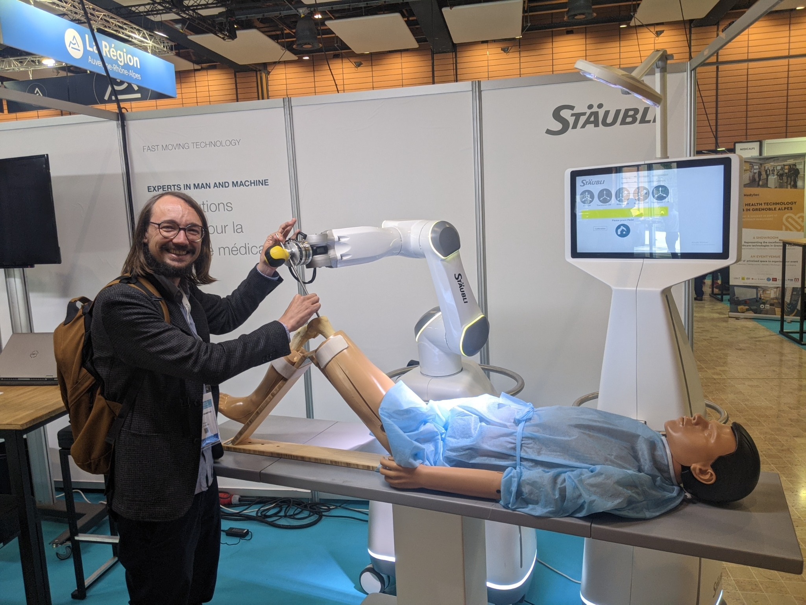
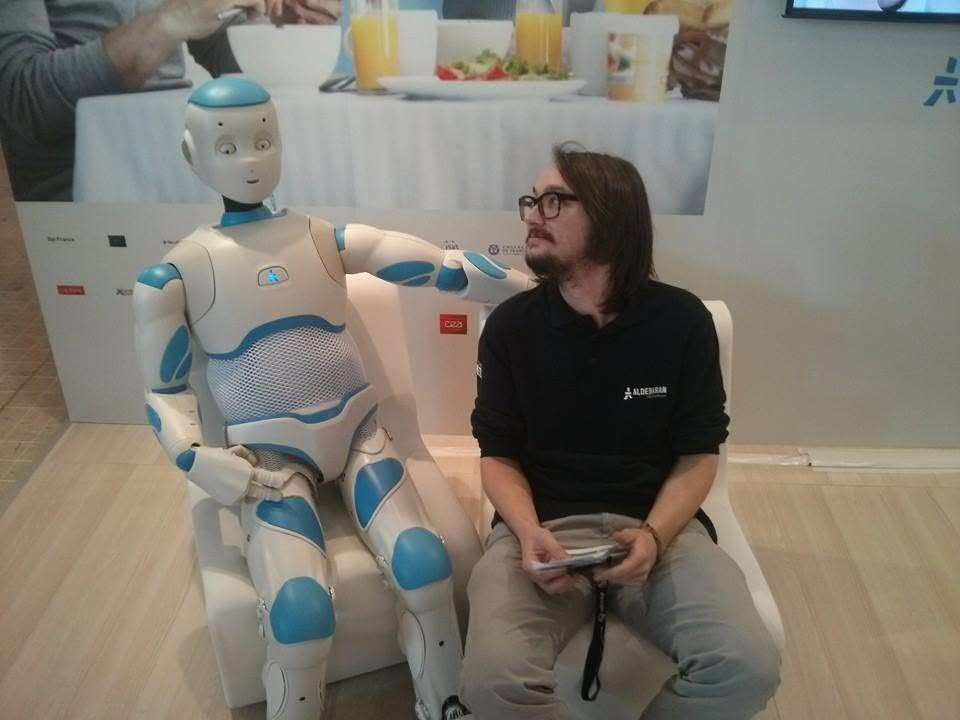
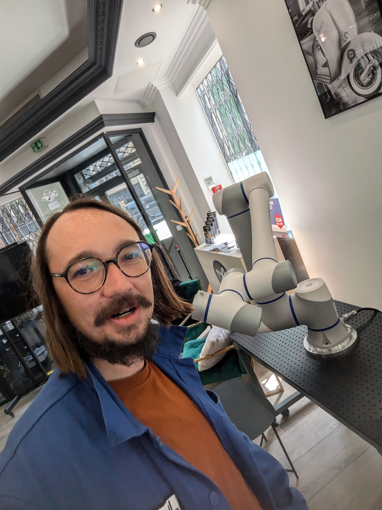
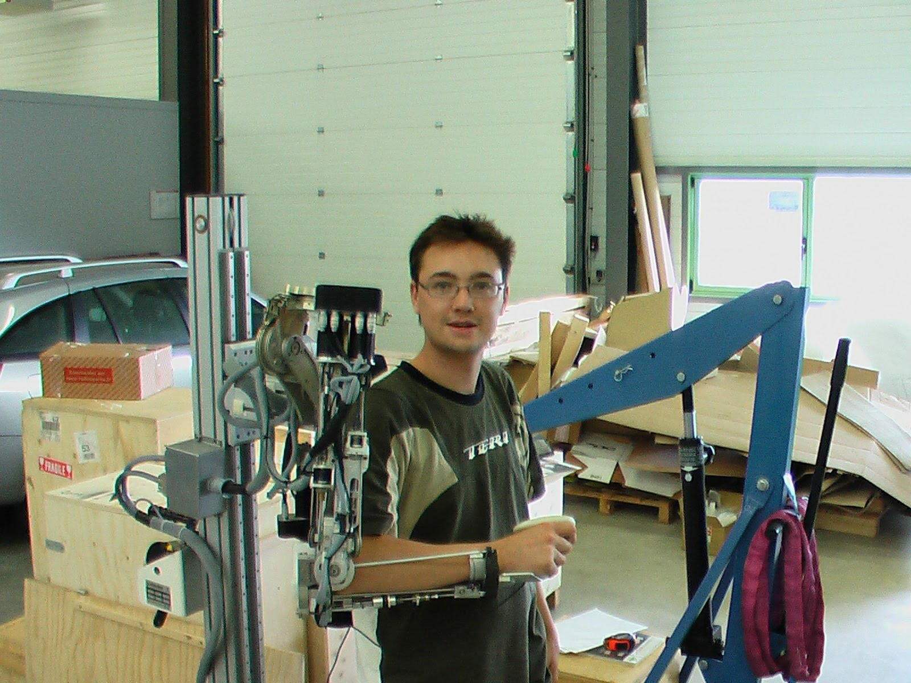

01 / B2B
Robotique médicale
Développement d'un robot collaboratif propriétaire pour l'assistance à la chirurgie orthopédique. (photo non représentative)
Quelques expériences qui illustrent mon parcours dans les systèmes robotiques, de la recherche à la robotique médicale en passant par la robotique humanoïde.

Développement d'un robot collaboratif propriétaire pour l'assistance à la chirurgie orthopédique. (photo non représentative)

Développement et amélioration de plateformes humanoïdes pour la recherche, le grand public et l'assistance aux personnes agées.

Intégration et mise en œuvre de bras robotisés industriels du commerce dans des applications techniques. (photo non représentative)

Participation à des projets de recherche et développement autour de systèmes robotiques expérimentaux pour le domaine médical et nucléaire.
Échangeons sur les besoins techniques de votre projet.